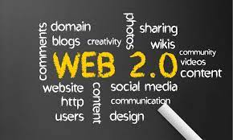
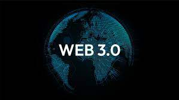

Tabla Web
Evolucion de las aplicaciones web
Hitos
Hechos
Imagenes
Referencias Bibliograficas
Internet
El término Internet se utiliza para hacer referencia a una red de computadoras interconectadas entre sí a nivel mundial con el objetivo de hacer común información de acceso público. Esta red utiliza un lenguaje en común para la comunicación entre los dispositivos.
internet
WEB 1.0
La Web 1.0 se refiere a la primera etapa de desarrollo y evolución de la World Wide Web, que abarca desde su inicio a principios de la década de 1990 hasta aproximadamente finales de la década de 2000. Durante este período, la Web estaba principalmente orientada hacia la presentación estática de información en forma de páginas web, con una interacción limitada por parte de los usuarios.
Web 1.0
WEB 2.0
La Web 2.0 es un término que se refiere a la segunda etapa en la evolución de la World Wide Web, caracterizada por una mayor interactividad, participación del usuario y la creación de contenido generado por los usuarios. A diferencia de la Web 1.0, donde la mayoría del contenido era estático y unidireccional, la Web 2.0 introdujo una serie de tecnologías y prácticas que permitieron una experiencia web más dinámica y colaborativa.

Web 2.0
WEB 3.0
El término "Web 3.0" es un concepto en evolución que se refiere a una visión futura de Internet, caracterizada por una web más descentralizada, interoperable, autónoma y centrada en el usuario.

web3.0
WEB 4.0
El término "Web 4.0" no es tan común ni está tan definido como los conceptos de Web 1.0, Web 2.0 o incluso Web 3.0. Sin embargo, algunas personas y expertos en tecnología utilizan este término para describir una futura fase de la evolución de Internet que va más allá de lo que se ha imaginado hasta ahora.
web 4.0